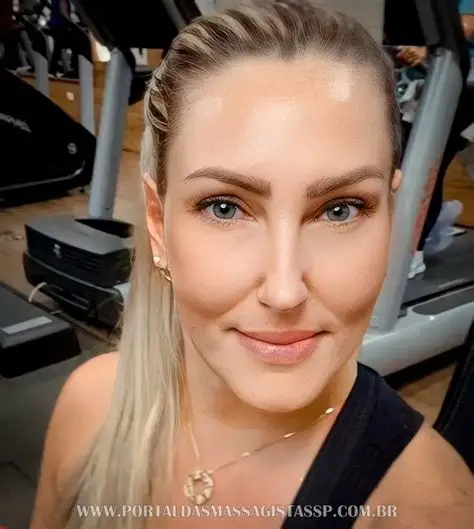
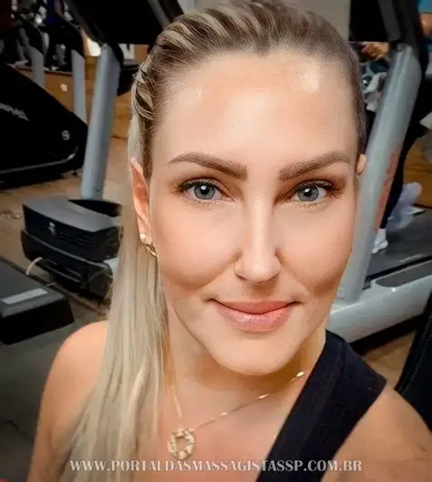
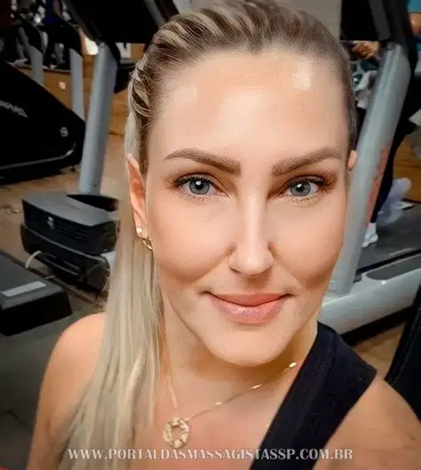

Terapeutas em Destaque
 

Experiências únicas em massagem tântrica
Agende sua massagem aqui

A massagem tântrica é uma jornada de autoconhecimento, prazer e libertação. Ela trabalha energia vital, desbloqueia emoções e expande a consciência. Nossa missão é oferecer um ambiente seguro, acolhedor e transformador, conduzido por terapeutas experientes que respeitam seu tempo e limites. A experiência promove relaxamento profundo, conexão interior e intensificação do prazer erótico, proporcionando uma vivência única de bem-estar físico e emocional.
Agende sua massagem aqui"Uma experiência transformadora, nunca imaginei sentir tamanha energia. Recomendo a todos!"
"Profissionalismo e sensibilidade. Saí renovado e com outra visão sobre meu corpo e prazer."
"Ambiente acolhedor e energia incrível. Uma das melhores escolhas que já fiz na vida."
É uma prática que envolve toques conscientes para liberar energia e proporcionar bem-estar físico e emocional.
A massagem tântrica pode envolver prazer erótico, mas sempre com respeito, segurança e foco no autoconhecimento.
Sim, a nudez faz parte do processo, mas você sempre estará no controle e respeitado em seus limites.
Basta clicar nos botões de WhatsApp espalhados pelo site e agendar sua experiência.